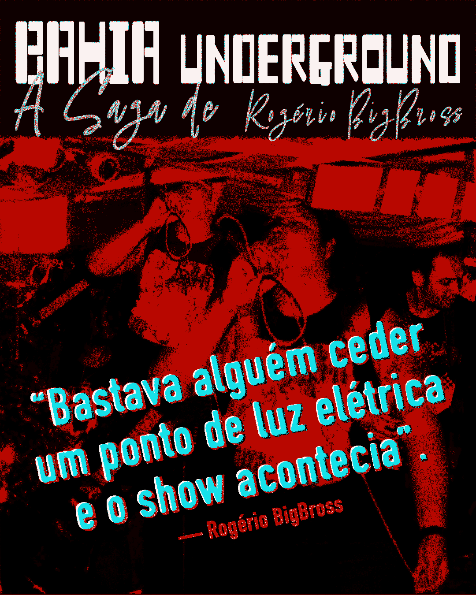

Bahia Underground — The Saga of Rogério BigBross The living memory of a scene that never asked for permission to exist.
Feature Documentary | Brazil | 2026
Through archival concert footage, historical music videos, and present-day interviews, Bahia Underground — The Saga of Rogério BigBross traces the evolution of Salvador’s DIY music scene through the perspective of cultural producer Rogério BigBross, a key figure in its continuity.
Emerging outside institutional structures and driven by independence, collaboration, and resistance, this underground movement shaped a cultural ecosystem built on autonomy and persistence.
More than a portrait of an individual, the film reveals a collective history — one forged through sound, urgency, and the need to create — offering a rare insight into a scene that continues to transform itself over time.
Context

More than a biography, the film captures the cultural resistance of an underground scene that has played a vital role in shaping Salvador’s independent music landscape — a movement built on autonomy, persistence, and collective creation.
I am drawn to stories that exist at the margins of visibility — cultural movements and individuals who persist beyond institutional recognition.
Press Kit
Full materials available for festivals, curators and distribution partners.
{kind=link}
Contact
contato@neio.com.br